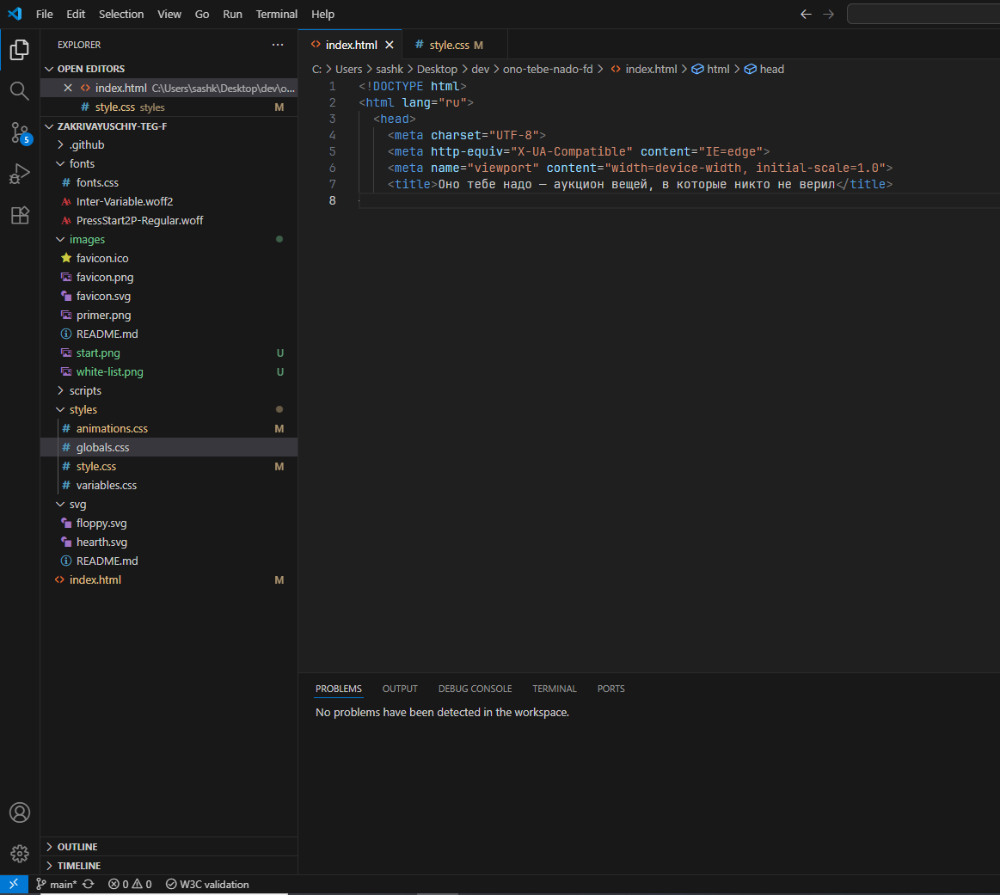
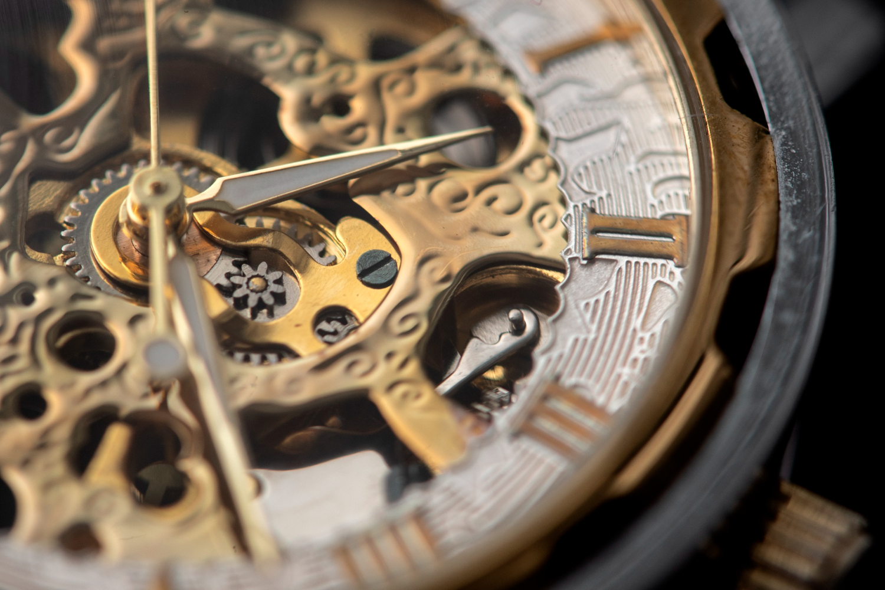
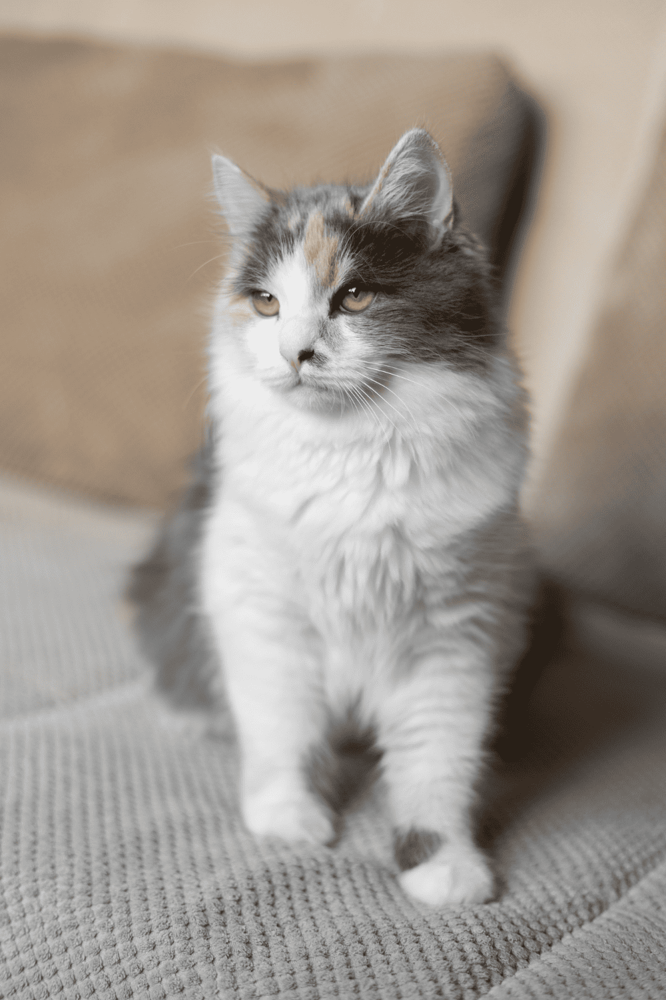
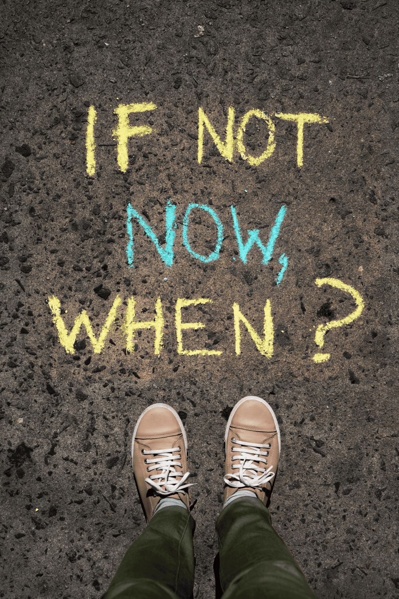

Это было самое начало пути. На этом этапе важно было проникнуться
основами и настроиться на учёбу. И, возможно, подумать, как новые
знания могут повлиять на ваше будущее.
И хотя применение новых знаний уже было оформлено в картинку в голове,
сомнения об итнтеграции обучения в жизнь еще оставались.
1 спринт: Я — чистый лист

На первых этапах мы работали со страхами и сомнениями, которые часто
испытывают новички. Один из них — страх перед чистым листом. Это,
конечно же, намного сложнее, чем боязнь куска бумаги. Часто за этим
ощущением скрываются более глубокие вопросы: с чего начать? а вдруг
будет слишком сложно? что, если я не справлюсь?
С первой строчкой кода страх сменился на азарт выполнения задачи. Все
оказалось не так плохо, как можно было предположить.
1 спринт: А если не получится?
Первый проект — позади! Но это всё ещё самое начало пути. Радость
могла быстро померкнуть и смениться ожиданием провала. Или вы,
наоборот, могли вдохновиться успехами и поверить в себя.
Было только предвкушение изучения и понимания новых интересных тем по
вёрстке.
2 спринт: Погоня за идеалом

На этом этапе вы уже достаточно разбирались в основах вёрстки, чтобы
понять, как много ещё впереди. Вы могли попытаться погнаться за
идеалом и понять, что он недостижим. А, может, вы вовсе и не
подвержены перфекционизму и вместо того, чтобы сделать идеально,
старались просто сделать.
«Внимание к мелочам рождает совершенство, а вот совершенство уже
не мелочь.»
2 спринт: О тех, кто рядом
Всё это время вы были не одиноки (хотя, возможно, иногда и
чувствовали, что одни против целого мира). Вас окружали одногруппники,
команда сопровождения и просто близкие люди, которым можно
пожаловаться, если очередной макет просто так не поддавался. Осваивать
что-то новое легче, когда рядом есть единомышленники, не правда ли?
Все окружение курса: от наставников и ревьюеров до чата одногруппников
очень помогает, когда хочется разобраться в сложном или неочевидном
вопросе.
3 спринт: Обходные стратегии

На этом курсе вы постоянно решали разные задачи. В какой-то момент вам
могло показаться, что решения просто иссякли. Значит, пришло время
посмотреть на задачу под другим углом.
Честно говоря, добавить нечего.
3 спринт: Когда опускаются руки
Во время учёбы часто возникает чувство, когда не знаешь, за что
хвататься. Вроде и проектную пора сдавать, и задачи хочется порешать,
и в теории получше разобраться, и жизнь не забыть пожить. В такие
моменты очень нужна концентрация. Вспомните, откуда вы её черпали.
Приходится жертвовать частями других аспектов жизни. Но когда знаешь,
что это даст свои плоды, пережить такой период намного проще.
«Сейчас я здесь»

Сейчас вы уже очень много знаете о вёрстке. Но это только начало.
Во-первых, впереди ещё много материала про «красотищу». Во-вторых, с
окончанием курса учёба не заканчивается. Вёрстка — это целый мир. И
этот мир постоянно меняется. Познать его полностью не получится, но
это тот случай, когда важен сам процесс познания. Ведь часто путь — и
есть результат.